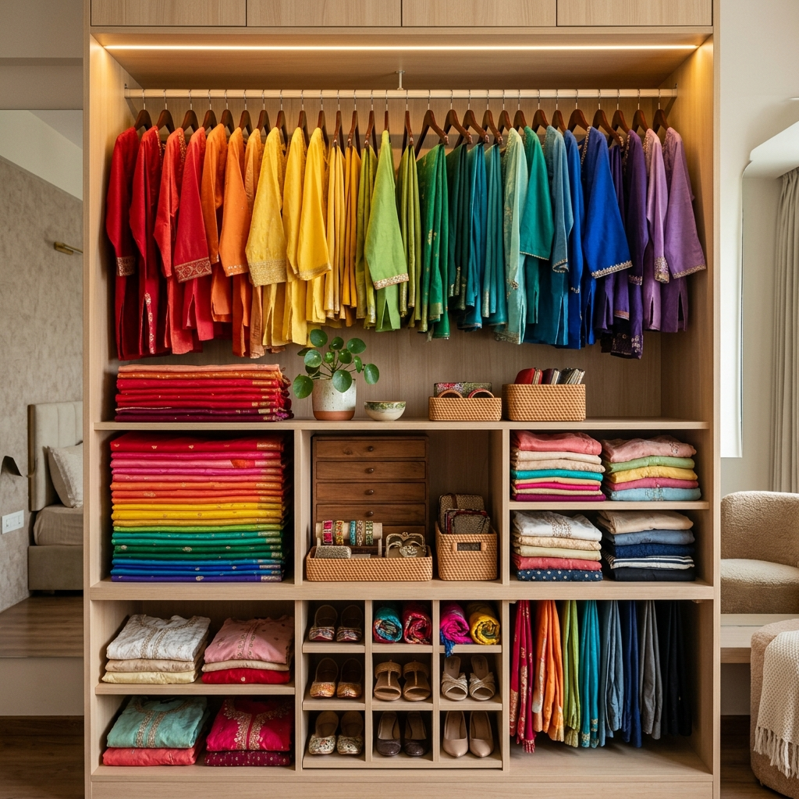

Last updated: July 18, 2026
How to Organize Your Indian Ethnic Wardrobe by Color Palette (Step-by-Step Guide)

If you have ever stood in front of a wardrobe full of silk sarees, embroidered kurtas, palazzo pants, and folded dupattas only to feel like you have "nothing to wear," the problem is almost never a lack of clothing. It is how your wardrobe is organized.
Most closet organization tutorials on YouTube or Pinterest recommend the standard Western ROYGBIV rainbow method — hanging white t-shirts next to red blouses and black blazers. While that works for Western wardrobes consisting of single-piece items, it completely fails for Indian ethnic wear.
Indian garments are inherently multi-piece, multi-tonal, and heavily embellished. A 3-piece suit set has a top, bottom, and dupatta. A saree has a separate blouse, petticoat, and drape. Storing these items strictly in fixed pre-matched sets traps your clothes, limiting your ability to mix and match.
In this guide, we break down a practical, color-theory-backed system to organize your Indian wardrobe by color palette and undertone, unlocking dozens of new outfit combinations from clothes you already own.
Why Standard Rainbow Sorting Fails for Indian Clothes
Before organizing, it helps to understand why traditional sorting methods make Indian closets chaotic:
1. Fixed-Set Trap: When you hang a yellow kurta, green palazzo, and printed dupatta together as a fixed set, you mentally lock those three items together. You miss seeing that the yellow kurta pairs beautifully with a white skirt or jeans.
2. Embroidery & Border Confusion: A navy blue saree with a heavy gold zari border doesn't fit neatly into a plain "blue" section. Its dominant visual weight is metallic gold.
3. Dupatta & Blouse Disconnect: Dupattas and saree blouses are color anchors. Storing them stuffed in drawers away from tops and bottoms creates friction when trying to assemble an outfit in the morning.
```
+-----------------------------------------------------------------------+
| TRADITIONAL VS COLOR-PALETTE |
|---|
+-----------------------------------------------------------------------+
| Traditional Method: | Color-Palette Method: |
|---|---|
| - Fixed pre-matched sets | - Deconstructed separates by color |
| - Stuffed dupatta drawers | - Color temperature zone sorting |
| - Rainbow color order | - Contrast-level grouping |
+-----------------------------------------------------------------------+
```
Step 1: Deconstruct Your Sets into Base & Accent Separates
The first rule of color-palette closet organization is deconstructing multi-piece ethnic sets.
Separate your garments into three distinct functional categories:
- Base Tops: Kurtas, blouses, short tunics, Anarkalis, crop tops.
- Base Bottoms: Palazzos, cigarette trousers, skirts, churidars, jeans.
- Color Anchors: Dupattas, jackets, capes, ethnic vests.
By freeing your kurtas and palazzos from fixed 3-piece sets, you immediately double your visible outfit options.
Step 2: Sort Separates into Warm & Cool Undertone Zones
Instead of arranging by the visible rainbow, divide your closet into two main Color Temperature Zones:
Zone A: Warm Undertone Palette (Golden & Earthy)
Group all garments featuring warm, golden-based colors together:
- Warm Reds & Oranges: Crimson, rust, terracotta, coral, peach, marigold yellow, mustard.
- Earthy Greens & Warm Neutrals: Olive, forest green, warm cream, camel, beige, gold.
Zone B: Cool Undertone Palette (Blue & Rosy)
Group all garments featuring cool, blue-pink-based colors together:
- Cool Blues & Purples: Royal blue, navy, sapphire, lavender, deep plum, mauve.
- Cool Reds & Pink: Magenta, fuchsia, ruby red, dusty rose, icy mint, silver, slate grey.
> Why this works: When all your warm garments hang together in one section and cool garments in another, any top in Zone A will naturally harmonize with any bottom or dupatta in Zone A. You can reach into Zone A with your eyes closed and pull out a color-harmonious combination!
Step 3: Arrange Garments by Value Contrast (Light to Dark)
Within your Warm and Cool zones, arrange garments from lightest to darkest:
1. Whites & Off-Whites / Pastels (Cream, beige, powder blue, soft pink)
2. Medium Saturation Mid-Tones (Mustard, coral, lavender, warm teal)
3. Deep Saturated Jewel Tones (Emerald, royal blue, rust, deep violet)
4. Dark Neutrals (Charcoal, navy, black, deep chocolate)
This value-contrast sorting makes it effortless to execute the High-Contrast Rule (pairing a dark top with a light bottom) or the Monochromatic Rule (pairing items from the same vertical shade column).
Step 4: The "Dupatta-Blouse Anchor System" for Multi-Color Pieces
What about printed dupattas, embroidered sarees, or multi-colored Anarkalis?
Use the 60% Dominant Color Rule:
- Identify the background color that covers 60% of the fabric area.
- If a dupatta has a white base with red and green floral print, place it in the Light/White section.
- If a saree is royal blue with a heavy gold zari border, place it in the Cool/Jewel Tone section, but hang a gold blouse tag or accessory clip next to it to signal its metallic accent.
Step 5: How Digital Wardrobe Analysis Complements Physical Sorting
While physical closet organization saves time in the morning, taking photos of your core ethnic separates and running them through digital colour analysis gives you predictive outfit matching.
An AI colour analysis system can:
- Scan your skin tone and assign your seasonal color profile (Spring, Summer, Autumn, Winter).
- Tag each garment in your closet by color code, undertone, and contrast level automatically.
- Generate new mix-and-match outfit combinations using garments you already own.
Frequently Asked Questions
How should I store heavy silk sarees that cannot be hung on hangers?
Store sarees folded in breathable muslin bags in your closet, but organize the bags by color family (Warm Silks vs. Cool Silks) and attach a swatch card or photo of the saree drape on the outside of each bag.
Should I keep my everyday cotton kurtas separate from heavy festive lehengas?
Yes. Divide your color-coded closet into two primary sections: Daily Wear (organized Warm to Cool, Light to Dark) and Festive & Occasion Wear (organized by contrast intensity).
Curious about which colors belong in your personal Warm vs Cool zones? Try our personal colour analysis guides or use [Colourity AI](https://colourity.com) to digitize and match your wardrobe effortlessly.